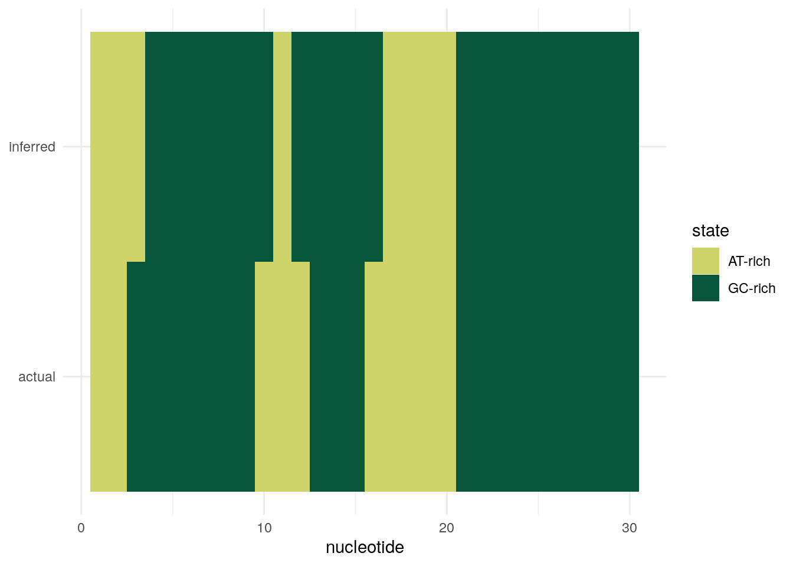

Last updated: 2023-06-29
Checks: 7 0
Knit directory: muse/
This reproducible R Markdown analysis was created with workflowr (version 1.7.0). The Checks tab describes the reproducibility checks that were applied when the results were created. The Past versions tab lists the development history.
Great! Since the R Markdown file has been committed to the Git repository, you know the exact version of the code that produced these results.
Great job! The global environment was empty. Objects defined in the global environment can affect the analysis in your R Markdown file in unknown ways. For reproduciblity it’s best to always run the code in an empty environment.
The command set.seed(20200712) was run prior to running
the code in the R Markdown file. Setting a seed ensures that any results
that rely on randomness, e.g. subsampling or permutations, are
reproducible.
Great job! Recording the operating system, R version, and package versions is critical for reproducibility.
Nice! There were no cached chunks for this analysis, so you can be confident that you successfully produced the results during this run.
Great job! Using relative paths to the files within your workflowr project makes it easier to run your code on other machines.
Great! You are using Git for version control. Tracking code development and connecting the code version to the results is critical for reproducibility.
The results in this page were generated with repository version a3c61e8. See the Past versions tab to see a history of the changes made to the R Markdown and HTML files.
Note that you need to be careful to ensure that all relevant files for
the analysis have been committed to Git prior to generating the results
(you can use wflow_publish or
wflow_git_commit). workflowr only checks the R Markdown
file, but you know if there are other scripts or data files that it
depends on. Below is the status of the Git repository when the results
were generated:
Ignored files:
Ignored: .Rhistory
Ignored: .Rproj.user/
Ignored: r_packages_4.3.0/
Untracked files:
Untracked: analysis/cell_ranger.Rmd
Untracked: analysis/tss_xgboost.Rmd
Untracked: code/multiz100way/
Untracked: data/HG00702_SH089_CHSTrio.chr1.vcf.gz
Untracked: data/HG00702_SH089_CHSTrio.chr1.vcf.gz.tbi
Untracked: data/ncrna_NONCODE[v3.0].fasta.tar.gz
Untracked: data/ncrna_noncode_v3.fa
Untracked: data/netmhciipan.out.gz
Untracked: women.json
Unstaged changes:
Modified: analysis/graph.Rmd
Note that any generated files, e.g. HTML, png, CSS, etc., are not included in this status report because it is ok for generated content to have uncommitted changes.
These are the previous versions of the repository in which changes were
made to the R Markdown (analysis/hmm.Rmd) and HTML
(docs/hmm.html) files. If you’ve configured a remote Git
repository (see ?wflow_git_remote), click on the hyperlinks
in the table below to view the files as they were in that past version.
| File | Version | Author | Date | Message |
|---|---|---|---|---|
| Rmd | a3c61e8 | Dave Tang | 2023-06-29 | Hidden Markov Models |
Based on the brilliant tutorial: Hidden Markov Models (HMMs) in R.
The simplest model of DNA sequence evolution assumes that the sequence has been produced by a random process that randomly chooses any of the four nucleotides at each position in the sequence and where the probability of choosing any one of the four nucleotides depends on a predetermined probability distribution; the four nucleotides are chosen with probabilities: \(P_A\), \(P_C\), \(P_G\), and \(P_T\). This is known as the multinomial sequence model.
A multinomial model for DNA sequence evolution has four parameters: the probabilities of the four nucleotides: \(P_A\), \(P_C\), \(P_G\), and \(P_T\). For example, we may create a multinomial model where \(P_A = 0.2\), \(P_C = 0.3\), \(P_G = 0.3\), and \(P_T = 0.2\). Note that \(P_A + P_C + P_G + P_T = 1\), as the sum of probabilities must equal 1.
We can use the function sample() to generate a DNA
sequence according to a probability distribution.
nucleotides <- c("A", "C", "G", "T")
probs <- c(0.2, 0.3, 0.3, 0.2)
seq_length <- 30
set.seed(1984)
sample(nucleotides, seq_length, replace = TRUE, prob = probs) [1] "T" "G" "G" "G" "T" "A" "C" "G" "A" "C" "A" "C" "T" "T" "C" "C" "C" "T" "A"
[20] "C" "T" "C" "T" "A" "T" "C" "A" "G" "G" "G"A multinomial model of DNA sequence evolution is a suitable model of the evolution of many DNA sequences. However, for some DNA sequences, a multinomial model is not an accurate representation of how the sequences have evolved. One reason is that a multinomial model assumes that each part of the sequence (e.g. the first 100 nucleotides of the sequence, the second 100 nucleotides, the third 100 nucleotides, etc.) all have the same frequency of each type of nucleotide (the same \(P_A\), \(P_C\), \(P_G\), and \(P_T\)).
Another assumption of a multinomial model of DNA sequence evolution is that the probability of choosing a particular nucleotide (e.g. “A”) at a particular position in the sequence only depends on the predetermined frequency of that nucleotide (\(P_A\)), and does not depend at all on the nucleotides found at adjacent positions in the sequence. This assumption holds true for many DNA sequences but in some cases the probability of finding a particular nucleotide at a particular position in the sequence does depend on what nucleotides are found at adjacent positions in the sequence. In this case, a different type of DNA sequence model called a Markov sequence model is a more accurate representation of the evolution of the sequence.
A Markov sequence model assumes that the sequence has been produced by a process that chose any of the four nucleotides in the sequence, where the probability of choosing any one of the four nucleotides at a particular position depends on the nucleotide chosen for the previous position. A Markov sequence model has four different probability distributions based on whether “A”, “C”, “G”, or “T” were chosen at the previous position.
A multinomial model of DNA sequence evolution has just four parameters: the probabilities of \(P_A\), \(P_C\), \(P_G\), and \(P_T\). In contrast, a Markov model has many more parameters has four sets of probabilities of \(P_A\), \(P_C\), \(P_G\), and \(P_T\) that differ depending on the previous nucleotide. The symbols \(P_AA\), \(P_AC\), \(P_AG\), and \(P_AT\) are usually used to represent the four probabilities for when the previous nucleotide as “A”.
It is common to store the probability parameters for a Markov model in a square matrix, which is known as a Markov transition matrix. The rows of the transition matrix represent the nucleotides found at the previous position, while the columns represent the nucleotides that could be found at the current position.
nucleotides <- c("A", "C", "G", "T")
afterAprobs <- c(0.2, 0.3, 0.3, 0.2)
afterCprobs <- c(0.1, 0.41, 0.39, 0.1)
afterGprobs <- c(0.25, 0.25, 0.25, 0.25)
afterTprobs <- c(0.5, 0.17, 0.17, 0.17)
my_transition_matrix <- matrix(c(afterAprobs, afterCprobs, afterGprobs, afterTprobs), 4, 4, byrow = TRUE)
rownames(my_transition_matrix) <- nucleotides
colnames(my_transition_matrix) <- nucleotides
my_transition_matrix A C G T
A 0.20 0.30 0.30 0.20
C 0.10 0.41 0.39 0.10
G 0.25 0.25 0.25 0.25
T 0.50 0.17 0.17 0.17The nucleotide chosen at each position at the sequence depends on the nucleotide chosen at the previous position. Since there are no previous nucleotides at the first position in the new sequence, we need to define the probabilities of choosing “A”, “C”, “G” or “T” for the first position. The symbols \(\Pi_A\), \(\Pi_C\), \(\Pi_G\), and \(\Pi_T\) are used to represent the probabilities of choosing “A”, “C”, “G”, or “T” at the first position.
generate_markov_seq <- function(transition_matrix, initial_probs, seq_length){
nucleotides <- c("A", "C", "G", "T")
my_sequence <- character()
first_nucleotide <- sample(nucleotides, 1, prob = initial_probs)
my_sequence[1] <- first_nucleotide
for (i in 2:seq_length){
prev_nucleotide <- my_sequence[i-1]
probabilities <- transition_matrix[prev_nucleotide, ]
nucleotide <- sample(nucleotides, 1, replace = TRUE, prob = probabilities)
my_sequence[i] <- nucleotide
}
return(my_sequence)
}
set.seed(1984)
generate_markov_seq(my_transition_matrix, rep(0.25, 4), 30) [1] "T" "A" "G" "G" "T" "C" "C" "G" "A" "C" "T" "A" "T" "T" "A" "C" "C" "G" "A"
[20] "C" "G" "C" "G" "A" "T" "A" "A" "G" "T" "G"Generate a sequence based on state transition and state emission probabilities.
generate_hmm_seq <- function(transition_matrix, emission_matrix, initial_probs, seq_length){
nucleotides <- c("A", "C", "G", "T")
states <- c("AT-rich", "GC-rich")
my_sequence <- character()
my_states <- character()
first_state <- sample(states, 1, prob=initial_probs)
probabilities <- emission_matrix[first_state, ]
first_nucleotide <- sample(nucleotides, 1, prob=probabilities)
my_sequence[1] <- first_nucleotide
my_states[1] <- first_state
for (i in 2:seq_length){
prev_state <- my_states[i-1]
state_probs <- transition_matrix[prev_state,]
state <- sample(states, 1, prob=state_probs)
probabilities <- emission_matrix[state,]
nucleotide <- sample(nucleotides, 1, prob=probabilities)
my_sequence[i] <- nucleotide
my_states[i] <- state
}
return(list(seq = my_sequence, states = my_states))
}
set.seed(1984)
init_prob <- c(0.5, 0.5)
my_seq <- generate_hmm_seq(hmm_tran_matrix, hmm_emi_matrix, init_prob, 30)
my_seq$seq
[1] "A" "T" "T" "G" "C" "C" "G" "C" "G" "T" "T" "G" "C" "G" "G" "T" "A" "A" "T"
[20] "T" "C" "C" "G" "G" "G" "C" "C" "C" "C" "C"
$states
[1] "AT-rich" "AT-rich" "GC-rich" "GC-rich" "GC-rich" "GC-rich" "GC-rich"
[8] "GC-rich" "GC-rich" "AT-rich" "AT-rich" "AT-rich" "GC-rich" "GC-rich"
[15] "GC-rich" "AT-rich" "AT-rich" "AT-rich" "AT-rich" "AT-rich" "GC-rich"
[22] "GC-rich" "GC-rich" "GC-rich" "GC-rich" "GC-rich" "GC-rich" "GC-rich"
[29] "GC-rich" "GC-rich"If we have a HMM with two states, “GC-rich” and “AT-rich”, and we know the transmission and emission matrices of the HMM, can we take some new DNA sequence, and figure out which state (GC-rich or AT-rich) is the most likely to have generated each nucleotide position in that DNA sequence? This is a common problem in bioinformatics. It is called the problem of finding the most probable state path, as it essentially consists of assigning the most likely state to each position in the DNA sequence. The problem of finding the most probable state path is also sometimes called segmentation. For example, given a DNA sequence of 1,000 nucleotides, you may wish to use your HMM to segment the sequence into blocks that were probably generated by the “GC-rich” state or by the “AT-rich” state.
The problem of finding the most probable state path given a HMM and a sequence (i.e. the problem of segmenting a sequence using a HMM), can be solved by an algorithm called the Viterbi algorithm. As its output, the Viterbi algorithm gives for each nucleotide position in a DNA sequence, the state of your HMM that most probably generated the nucleotide in that position. For example, if you segmented a particular DNA sequence of 1,000 nucleotides using a HMM with “AT-rich” and “GC-rich” states, the Viterbi algorithm may tell you that nucleotides 1-343 were most probably generated by the AT-rich state, nucleotides 344-900 were most probably generated by the GC-rich state, and 901-1000 were most probably generated by the AT-rich state.
most_probable_state <- function(sequence, transition_matrix, emission_matrix){
states <- rownames(emission_matrix)
sequence <- toupper(sequence)
num_states <- dim(transition_matrix)[1]
v <- matrix(NA, nrow = length(sequence), ncol = dim(transition_matrix)[1])
v[1, ] <- 0
v[1,1] <- 1
for (i in 2:length(sequence)){
for (l in 1:num_states){
state_l_prob_nucleotide_i <- emission_matrix[l,sequence[i]]
v[i,l] <- state_l_prob_nucleotide_i * max(v[(i-1),] * transition_matrix[,l])
}
}
most_probable_state_path <- apply(v, 1, function(x) which.max(x))
print(states[most_probable_state_path])
}
inferred <- most_probable_state(my_seq$seq, hmm_tran_matrix, hmm_emi_matrix) [1] "AT-rich" "AT-rich" "AT-rich" "GC-rich" "GC-rich" "GC-rich" "GC-rich"
[8] "GC-rich" "GC-rich" "GC-rich" "AT-rich" "GC-rich" "GC-rich" "GC-rich"
[15] "GC-rich" "GC-rich" "AT-rich" "AT-rich" "AT-rich" "AT-rich" "GC-rich"
[22] "GC-rich" "GC-rich" "GC-rich" "GC-rich" "GC-rich" "GC-rich" "GC-rich"
[29] "GC-rich" "GC-rich"expected <- my_seq$states
tibble(
nucleotide = 1:length(expected),
actual = factor(expected),
inferred = factor(inferred)
) |>
pivot_longer(-nucleotide, names_to = "property", values_to = "state") -> res
res# A tibble: 60 × 3
nucleotide property state
<int> <chr> <fct>
1 1 actual AT-rich
2 1 inferred AT-rich
3 2 actual AT-rich
4 2 inferred AT-rich
5 3 actual GC-rich
6 3 inferred AT-rich
7 4 actual GC-rich
8 4 inferred GC-rich
9 5 actual GC-rich
10 5 inferred GC-rich
# ℹ 50 more rowsPlot inferred versus expected states.
ggplot(res, aes(nucleotide, property, fill = state)) +
geom_tile() +
scale_fill_manual(values = c("#CED46A", "#07553B")) +
theme(axis.title.y = element_blank())
It is possible to use HMMs to model protein sequence evolution. When using a HMM to model DNA sequence evolution, we may have states such as “AT-rich” and “GC-rich”. Similarly, when using a HMM to model protein sequence evolution, we may have states such as “hydrophobic” and “hydrophilic”. In a protein HMM with “hydrophilic” and “hydrophilic” states, the “hydrophilic” HMM will have probabilities \(P_A\), \(P_R\), \(P_C\), … of choosing each of the 20 amino acids alanine (A), arginine (R), cysteine (C), etc. when in that state. Similarly, the “hydrophilic” state will have different probabilities of choosing each of the 20 amino acids. The probability of choosing a hydrophobic amino acid such as alanine will be higher in the “hydrophobic” state than in the “hydrophilic” state. A HMM of protein sequence evolution also defines a certain probability of switching from the “hydrophilic” state to the “hydrophobic” state, and a certain probability of switching from the “hydrophobic” state to the “hydrophilic” state.
HMMs were used to assign the most probable states to nucleotides that we presumably didn’t know (they are hidden).
A HMM can be defined by three parameters \((A, B, \pi)\), where:
sessionInfo()R version 4.3.0 (2023-04-21)
Platform: x86_64-pc-linux-gnu (64-bit)
Running under: Ubuntu 22.04.2 LTS
Matrix products: default
BLAS: /usr/lib/x86_64-linux-gnu/openblas-pthread/libblas.so.3
LAPACK: /usr/lib/x86_64-linux-gnu/openblas-pthread/libopenblasp-r0.3.20.so; LAPACK version 3.10.0
locale:
[1] LC_CTYPE=en_US.UTF-8 LC_NUMERIC=C
[3] LC_TIME=en_US.UTF-8 LC_COLLATE=en_US.UTF-8
[5] LC_MONETARY=en_US.UTF-8 LC_MESSAGES=en_US.UTF-8
[7] LC_PAPER=en_US.UTF-8 LC_NAME=C
[9] LC_ADDRESS=C LC_TELEPHONE=C
[11] LC_MEASUREMENT=en_US.UTF-8 LC_IDENTIFICATION=C
time zone: Etc/UTC
tzcode source: system (glibc)
attached base packages:
[1] stats graphics grDevices utils datasets methods base
other attached packages:
[1] lubridate_1.9.2 forcats_1.0.0 stringr_1.5.0 dplyr_1.1.2
[5] purrr_1.0.1 readr_2.1.4 tidyr_1.3.0 tibble_3.2.1
[9] ggplot2_3.4.2 tidyverse_2.0.0 workflowr_1.7.0
loaded via a namespace (and not attached):
[1] sass_0.4.5 utf8_1.2.3 generics_0.1.3 stringi_1.7.12
[5] hms_1.1.3 digest_0.6.31 magrittr_2.0.3 timechange_0.2.0
[9] evaluate_0.20 grid_4.3.0 fastmap_1.1.1 rprojroot_2.0.3
[13] jsonlite_1.8.5 processx_3.8.1 whisker_0.4.1 ps_1.7.5
[17] promises_1.2.0.1 httr_1.4.5 fansi_1.0.4 scales_1.2.1
[21] jquerylib_0.1.4 cli_3.6.1 rlang_1.1.0 munsell_0.5.0
[25] withr_2.5.0 cachem_1.0.7 yaml_2.3.7 tools_4.3.0
[29] tzdb_0.3.0 colorspace_2.1-0 httpuv_1.6.9 vctrs_0.6.2
[33] R6_2.5.1 lifecycle_1.0.3 git2r_0.32.0 fs_1.6.2
[37] pkgconfig_2.0.3 callr_3.7.3 pillar_1.9.0 bslib_0.4.2
[41] later_1.3.0 gtable_0.3.3 glue_1.6.2 Rcpp_1.0.10
[45] highr_0.10 xfun_0.39 tidyselect_1.2.0 rstudioapi_0.14
[49] knitr_1.42 farver_2.1.1 htmltools_0.5.5 labeling_0.4.2
[53] rmarkdown_2.21 compiler_4.3.0 getPass_0.2-2